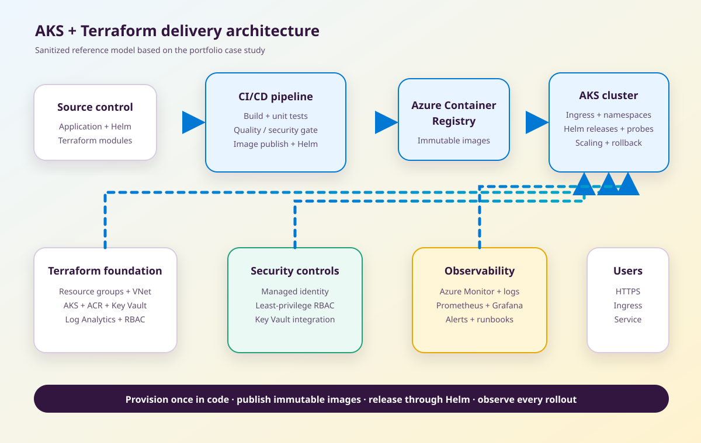

The problem
Containerized services needed a deployment path that could be rebuilt across environments, released quickly, and operated without relying on manual Azure Portal work. The platform also needed a clear answer for secrets, access, health checks, monitoring, and rollback.
Architecture

Provisioning model
Terraform owns the Azure foundation: resource groups, networking, AKS, ACR, Key Vault, Log Analytics, and role assignments. The important design choice is ownership. If a resource affects repeatability, access, or release behavior, it belongs in reviewed code rather than a portal checklist.
Modules separate shared platform concerns from environment values. Remote state, consistent naming, tags, and explicit outputs make it easier for the release layer to consume the platform without copying infrastructure details into application pipelines.
Release flow
- A pull request validates application and infrastructure changes.
- The build runs tests and quality or security checks.
- An immutable image is pushed to Azure Container Registry.
- The approved image tag is passed to Helm.
- AKS performs a controlled rollout using readiness and liveness probes.
- Deployment health is checked before promotion is considered complete.
- A failed release rolls back to the previous Helm revision.
Challenges and decisions
Configuration drift
Manual environment setup creates small differences that become production incidents later. Terraform and Helm provide separate but connected sources of truth for platform and workload configuration.
Secrets and identity
The platform prefers managed identity and scoped RBAC over stored credentials. Application secrets remain in Key Vault, while deployment permissions are separated from runtime permissions.
Safe releases
A deployment is not safe because the command returned success. Probes, rollout status, telemetry, and a tested rollback path are part of the release gate.
Operational handoff
Dashboards, alerts, ownership, and runbooks are defined before production handoff. This prevents the common gap where a platform can deploy software but cannot explain why it is unhealthy.
Security decisions
- Use managed identity where Azure resources can authenticate directly.
- Keep secrets in Key Vault and out of Git and generic pipeline variables.
- Apply least-privilege RBAC to deployment and runtime identities.
- Separate environments and namespaces to reduce accidental access.
- Validate application and infrastructure changes before image publication.
- Retain deployment and access logs for audit and incident review.
Measured result
The resume reports that automated delivery reduced release turnaround from hours to under 15 minutes and improved reliability using zero-downtime deployment patterns. Those results are stated as professional experience, while this public repository provides the architecture and decision record rather than confidential client code.
What I would verify in production
- Terraform plans are reviewed and contain no unintended replacement.
- Images use immutable tags and can be traced back to a commit.
- Readiness, liveness, resource requests, and limits match real workload behavior.
- Dashboards show platform, workload, dependency, and release signals.
- Alerts have owners, thresholds, and a linked runbook.
- Rollback is tested, not just documented.